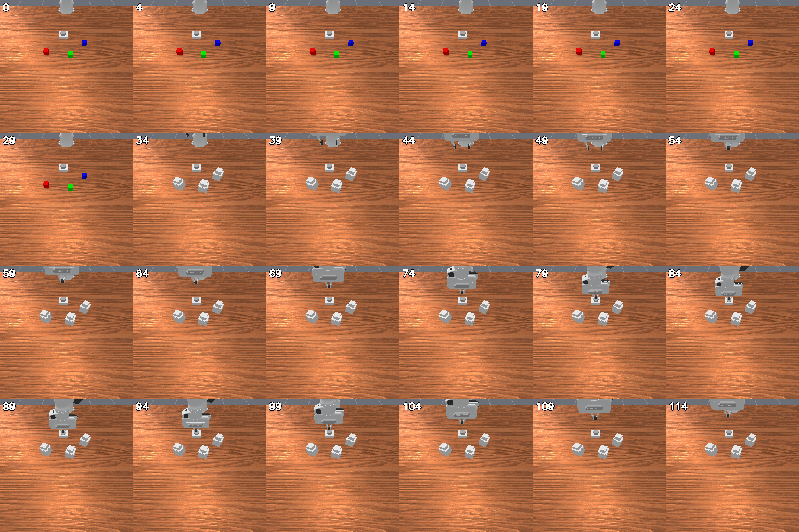
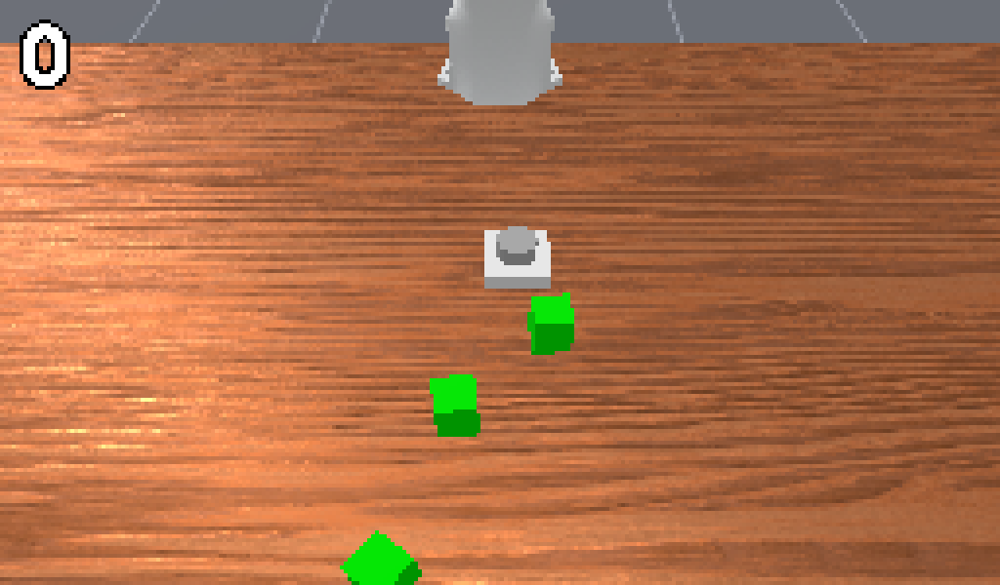
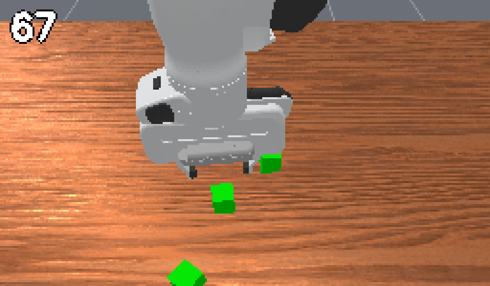
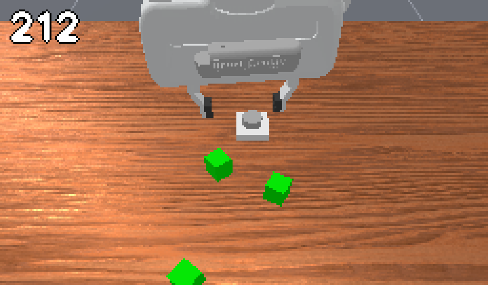
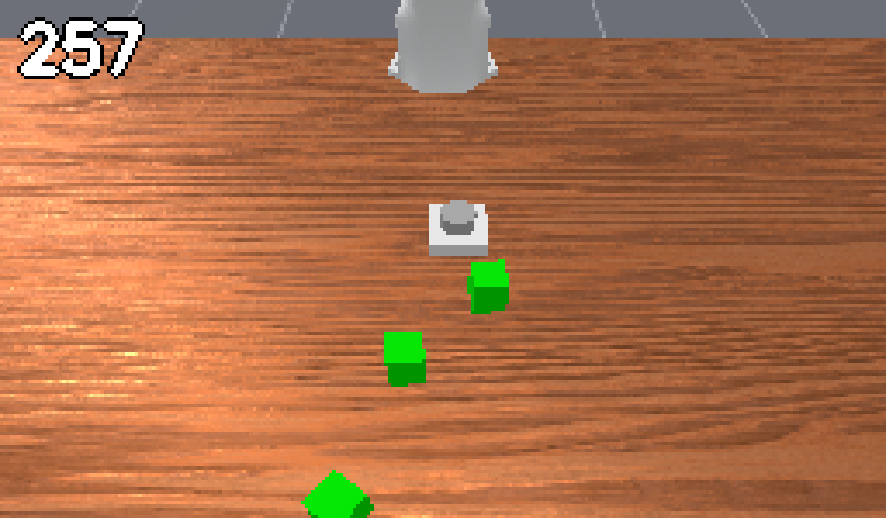
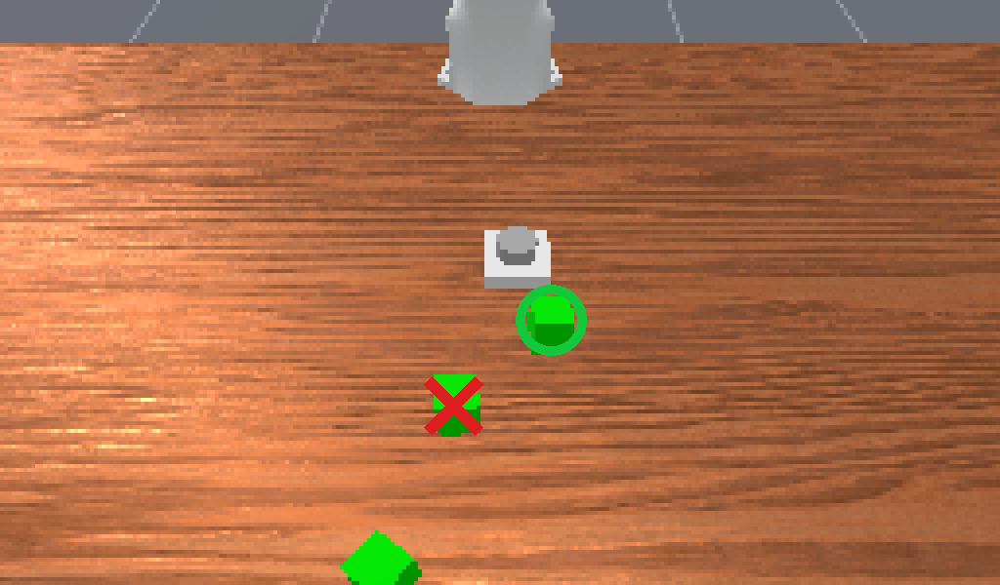
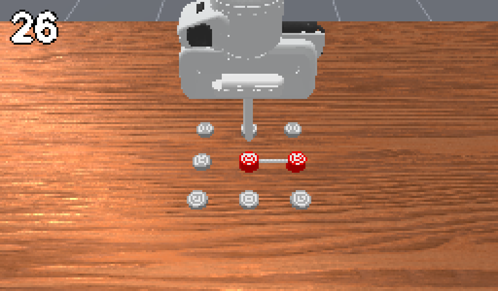
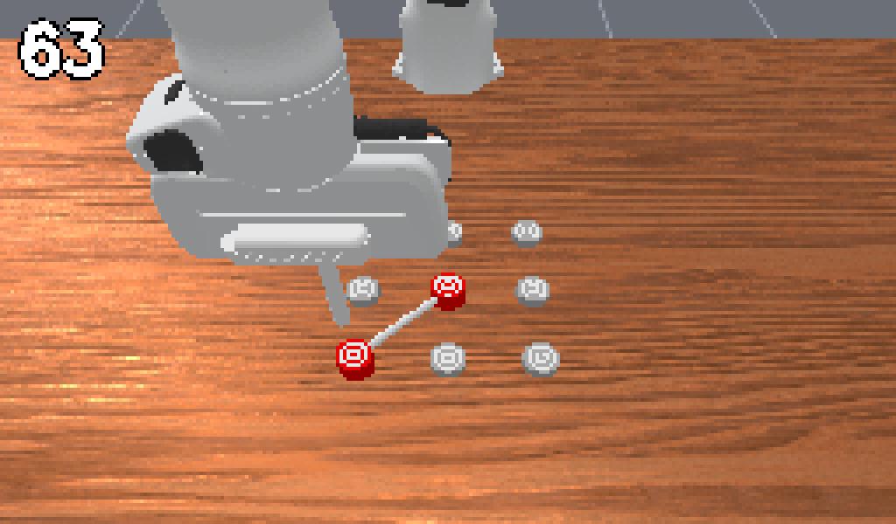
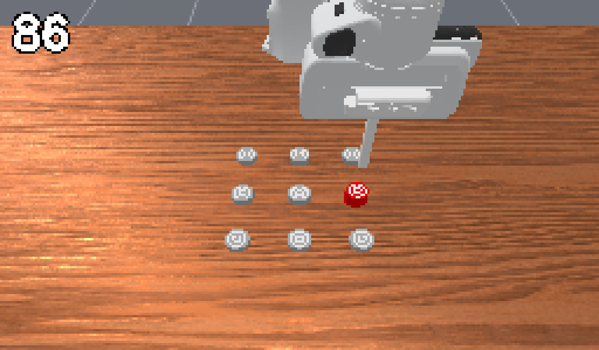
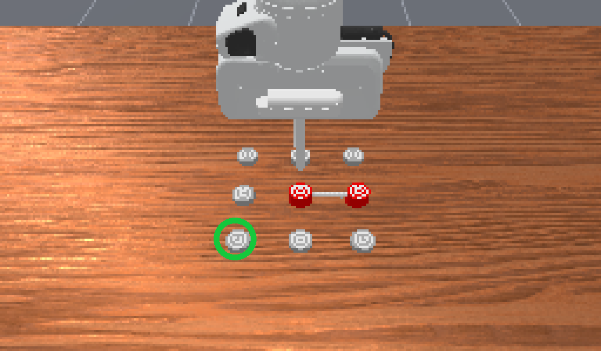

When Memory Lives Outside the Policy
Rethinking Robot Memory Benchmarks with Agentic Harnesses
Abstract
Memory benchmarks for robot manipulation were designed to evaluate end-to-end robot foundation models, but general-purpose multimodal models can now control robots by choosing among high-level skills. We ask whether such benchmarks remain challenging in the agent era. We wrap GPT-6 Astra and Claude Opus 5.5 in a simple, training-free harness that selects RoboMME's high-level skills through stateless API calls, so that the model receives information about earlier steps only through the prompt that the harness builds. On 160 matched test episodes across all 16 tasks, GPT-6 Astra succeeds in 81.3% of episodes with a text log of its previous actions and their outcomes, and in 95.0% once it also sees a 24-frame sheet of its own past execution (Claude Opus 5.5: 76.9% and 88.8%), compared with 90.5% for humans. The gain is concentrated in three tasks whose key visual cue disappears before it is needed, and costs only about $0.04 more per episode. With high-level skills and privileged execution, a simple agent thus nearly saturates the benchmark, and its score depends substantially on which past observations the harness provides; because an episode requires fewer than four high-level decisions on average, we argue that robot memory benchmarks must move to longer-horizon tasks. On RMBench, removing all history drops success from 91% to 0%, yet a text action log alone matches text plus visual memory built from the frames seen at each decision (91% vs. 93%, p = 0.51), unlike RoboMME where visual memory adds 13.8 points (130 vs. 152 of 160, p = 2.7×10−5); RMBench's memory demand is largely met by an action log.
A Harness as a Diagnostic Instrument
Every decision is one stateless API call. The model remembers only what the harness puts in the prompt, so we can add or remove one memory source at a time.
Memory is whatever the context window holds. It grows with every step, cannot be ablated, and we cannot tell which past evidence the model actually used.
No chat session, no replayed responses or reasoning, no provider-side session. The only memory is the payload the harness builds, which we swap between none, an action log, and a visual history.
This is what makes the harness a measuring instrument: when the score changes, we know exactly which piece of remembered information caused it.
A failure can come from a wrong memory or from a bad grasp, a missed timing or a 2D-to-3D lifting error. Success rate alone cannot separate the two.
The model only decides what to do next; execution is handed to the benchmark's own planner or a fixed, training-free harness that never reads simulator state on RMBench.
Separating memory from manipulation means remaining failures point at what the agent remembered, not at how well the arm moved. Our results therefore concern the benchmarks' memory component, not end-to-end policies.

One decision on RoboMME (ButtonUnmask, test episode 0). (1) The harness builds a single prompt from the goal and skills,
its own action log, and the current image; demonstration tasks also get a 24-frame demo sheet, and the contact-sheet
condition adds a 24-frame sheet of the agent's own past control frames (orange). (2) GPT-6 Astra or Claude Opus 5.5 answers in one
stateless call. (3) The harness validates the skill and pixel. (4) RoboMME's built-in planner executes the skill. (5) The result and
frames are appended to memory.
Only skills, never low-level control
To separate memory from manipulation, the agent only decides what to do next. On RoboMME it picks one of the benchmark's high-level skills; on RMBench it names a skill and a pixel, and a fixed harness grounds and plans the motion.
Bypass native memory on purpose
Each decision is a separate API call with no chat session and no replayed reasoning, so memory is explicit and controllable. The only manipulated variable is the memory payload: nothing, an action log, or an action log plus a visual history.
Keep the harness minimal
No training, no retrieval, no task-specific strategy beyond short notes on benchmark conventions. Scores are a conservative estimate of what an agent can do, not the result of tuning.
Finding 1: A Simple Agent Nearly Saturates RoboMME
Under the same oracle-planner interface as RoboMME's own LLM baseline, a stateless agent goes from 47.9% (Gemini-2.5-Pro) to 95.0%.
none: action log + demo
contact-sheet: + 24-frame visual history
human (dashed line)
Average success (%). Our runs use 160 of the 800 test episodes (10 per task) and are only indicatively comparable. The oracle planner provides privileged execution, so these results concern high-level memory and grounding, not end-to-end control.
| Method | Counting | Permanence | Reference | Imitation | Avg |
|---|---|---|---|---|---|
| Best memory VLA (FrameSamp+Modul) | 65.2 | 25.1 | 36.3 | 51.4 | 44.5 |
| GPT-6 Astra + π0.5 (three-tier) | 69.5 | 94.0 | 92.0 | 61.0 | 79.1 |
| Gemini-2.5-Pro, oracle planner | 62.0 | 49.5 | 54.0 | 26.0 | 47.9 |
| Human, oracle planner | 88.5 | 91.0 | 93.0 | 89.5 | 90.5 |
GPT-6 Astra, none | 82.5 | 62.5 | 80.0 | 100.0 | 81.3 |
GPT-6 Astra, contact-sheet | 85.0 | 100.0 | 100.0 | 95.0 | 95.0 |
Claude Opus 5.5, none | 77.5 | 67.5 | 77.5 | 85.0 | 76.9 |
Claude Opus 5.5, contact-sheet | 85.0 | 97.5 | 92.5 | 80.0 | 88.8 |
Finding 2: The Score Depends on What the Harness Remembers
Same model, same code, same task notes. Adding a visual history of the agent's own execution flips 25 of 28 changed pairs in its favor for GPT-6 Astra (p = 2.7×10−5) and 23 of 27 for Opus (p = 3.1×10−4).


ButtonUnmask, test episode 0, GPT-6 Astra: “first press the button, then pick up the container hiding the red cube”.
Show the visual history the agent received at decision 1

24 frames sampled uniformly from the 115 control frames of the button press, tiled 6×4. The early tiles still show the red cube on the left.
The gains come from cues that disappear
The same three tasks, ButtonUnmask, ButtonUnmaskSwap and PickHighlight, account for 23 of 25
(GPT-6 Astra) and 19 of 23 (Opus) gains. In each, the decisive cue is gone from the current frame when the agent needs it. For the five
Video* tasks the demonstration is re-sent at every decision and never has to be remembered, so visual history changes nothing for GPT-6 Astra.
Because memory is explicit, we can also read how each model handles the gap: GPT-6 Astra confidently names a wrong container,
whereas Opus states that no earlier frame shows the cube and guesses.
| GPT-6 Astra | Opus 5.5 | GPT-6 Astra | Opus 5.5 | ||||||||
|---|---|---|---|---|---|---|---|---|---|---|---|
| Task | N | H | N | H | 3T | Task | N | H | N | H | 3T |
| VideoUnmaskd | 100 | 100 | 100 | 100 | 92 | SwingXtimes | 100 | 100 | 100 | 100 | 82 |
| VideoUnmaskSwapd | 100 | 100 | 100 | 90 | 100 | ButtonUnmask | 30 | 100 | 50 | 100 | 100 |
| VideoRepickd | 100 | 100 | 80 | 80 | 86 | ButtonUnmaskSwap | 20 | 100 | 20 | 100 | 84 |
| VideoPlaceButtond | 100 | 100 | 90 | 90 | 100 | PickHighlight | 20 | 100 | 40 | 100 | 84 |
| VideoPlaceOrderd | 100 | 100 | 100 | 100 | 98 | InsertPegd | 100 | 100 | 90 | 90 | 18 |
| BinFill | 80 | 80 | 90 | 90 | 82 | RouteStickd | 100 | 80 | 60 | 50 | 58 |
| PickXtimes | 100 | 100 | 100 | 100 | 96 | PatternLockd | 100 | 100 | 100 | 90 | 88 |
| MoveCubed | 100 | 100 | 90 | 90 | 80 | StopCube | 50 | 60 | 20 | 50 | 18 |
Per-task success (%) without (N) and with (H) visual history; 10 test episodes per task, so one episode is 10 points. d: a demonstration sheet is provided. 3T: the three-tier GPT-6 Astra + π0.5 system on all 50 test episodes per task. Highlighted: the three tasks whose cue is visible only briefly.
Some early failures were not memory failures
With our original task notes, GPT-6 Astra solved only 40% of VideoRepick and 10–20% of PatternLock.
Notes that state the task semantics (the target is the physical cube, not its original screen location) and the image–world direction
mapping raise both tasks to 100% in both conditions. Those failures reflected how the harness stated the task, not the difficulty of remembering.
(a) VideoRepick: the agent picks the cube at the originally grasped position instead of the swapped target.





(b) PatternLock: the agent names the right next segment but maps the image direction to the wrong robot action.




Finding 3: On RMBench, an Action Log Is Enough
RMBench has no skill library, so the same harness also performs the manipulation, with no privileged simulator state. We run a three-way ablation that removes the log too.

The same harness on RMBench (cover_blocks, seed 8, decision 8). GPT-6 Astra outputs a skill, a pixel, a placement pixel
and a line to record; it never outputs geometry. The harness grounds the pixel with point-prompted SAM2 and depth and plans the motion
with CuRobo. Execution failures are retried up to twice; a wrong decision ends the episode.
Successes out of 100 (10 tasks × seeds 0–9), GPT-6 Astra. 91 vs. 93: exact McNemar p = 0.51. Cost: $0.17 vs. $0.23 per episode.
| Task | no-memory | none | contact-sheet |
|---|---|---|---|
battery_try | 0/10 | 7/10 | 7/10 |
blocks_ranking_try | 0/10 | 10/10 | 10/10 |
cover_blocks | 0/10 | 7/10 | 8/10 |
observe_and_pickup | 0/10 | 7/10 | 9/10 |
place_block_mat | 0/10 | 10/10 | 10/10 |
press_button | 0/10 | 10/10 | 10/10 |
put_back_block | 0/10 | 10/10 | 10/10 |
rearrange_blocks | 0/10 | 10/10 | 10/10 |
swap_T | 0/10 | 10/10 | 9/10 |
swap_blocks | 0/10 | 10/10 | 10/10 |
| Total | 0/100 | 91/100 | 93/100 |
RoboMME: visual memory matters
Visual history adds 13.8 points (130 → 152 of 160). The cue in ButtonUnmask, ButtonUnmaskSwap and
PickHighlight appears briefly during the robot's own button press and is gone afterwards; no action log can recover it.
RMBench: memory is necessary, but a log suffices
Without history the agent fails every episode. With a plain action log it reaches 91/100, matching visual memory built from decision-time frames. What RMBench asks the agent to remember largely reduces to what it has already done.
What Should Robot Memory Benchmarks Measure Next?
In both benchmarks an episode takes only a few high-level decisions (fewer than four on RoboMME, about nine on RMBench), and the relevant evidence fits in the prompt. RoboMME remains a useful diagnostic for agent-level memory pipelines, but its success rate alone cannot be read as a measure of a model's native memory.
- Use much longer horizons, spanning many decisions or sessions, so that the full history cannot simply be kept in context and an agent must decide what to store.
- Withhold demonstrations after they are first shown, so they have to be remembered rather than re-read at every decision.
- Include cues that neither the current frame nor an action log can recover, the only regime in which our ablations separate memory representations.
Why we deliberately avoid the model's native memory
Recent systems show that frontier models can drive robots on these benchmarks. Closest to us, Embodied-Astra lets GPT-6 Astra control the robot directly through end-effector waypoints, and its memory is the model's own context: one chained conversation per episode, reaching 92.1% on RoboMME. That design asks how well a frontier model can do when it remembers everything natively.
We make the opposite choice on purpose. Every planner call is a separate, stateless API request, and memory is supplied only through an explicit, swappable module. With native memory, the memory representation is fixed to "everything in context" and cannot be ablated. With stateless calls, it becomes the experimental variable, which is what lets us show that RoboMME's score moves by 12–14 points with what the harness shows, and that RMBench is saturated by an action log. It also keeps the cost per call fixed instead of growing with episode length.
Likewise, Embodied-Astra hands both memory and the lifting of 2D observations to 3D geometry to the model. We deliberately let the model call only high-level skills, executed by RoboMME's oracle planner or by our fixed grounding harness on RMBench, so that what remains is a test of memory rather than of manipulation.
| Full-context VLM agent (e.g., Embodied-Astra) | Ours: stateless memory harness | |
|---|---|---|
| Goal | Maximize success; the model is the policy | Diagnose the benchmark; the harness is a measuring instrument |
| API calls | One chained conversation per episode | A separate, stateless call per decision; nothing carried over between calls |
| Memory | Native: the model's own growing context | External, explicit and swappable: none / action log / visual history |
| Ablatable? | No: memory is everything in context | Yes: one memory source added or removed at a time |
| Cost per call | Grows with episode length | Fixed ($0.05–0.12 per RoboMME episode) |
| Model output | End-effector keyframe waypoints | A high-level skill only (+ a target pixel); never geometry |
| Execution | The model's waypoints, via a motion planner | RoboMME: oracle skill planner; RMBench: pixel → SAM2 + depth → CuRobo |
| Claim | A frontier VLM can serve as a memory-capable robot policy | Current memory benchmarks are nearly saturated by a simple agent and need longer horizons |
The protocols differ (we rely on RoboMME's privileged planner), so we do not claim to outperform full-context agents.
Limitations
- Each RoboMME cell is run once per model on 160 of 800 test episodes; the McNemar test ignores that gains cluster within tasks.
- RoboMME's oracle planner gives privileged execution; results concern the benchmark's memory component, not end-to-end policies.
- The RMBench contact sheet holds only decision-time frames and cannot capture cues that appear during execution; the 91 vs. 93 result applies only to that form of visual memory.
- Some RMBench task notes tell the planner what to record, which favors the action log. RMBench seeds 0–9 were also used while debugging the harness; a rerun on unseen seeds is planned.
- We use a single planner on RMBench; a weaker open model and a full-context baseline under our harness are left for future work.
BibTeX
@article{wu2026memory,
title = {When Memory Lives Outside the Policy: Rethinking Robot Memory Benchmarks with Agentic Harnesses},
author = {Wu, Feiyang and Chen, Haoyu and Ji, Yandong and Chen, Haonan and Ye, Weirui and Liu, Yuejiang},
journal = {arXiv preprint},
year = {2026}
}